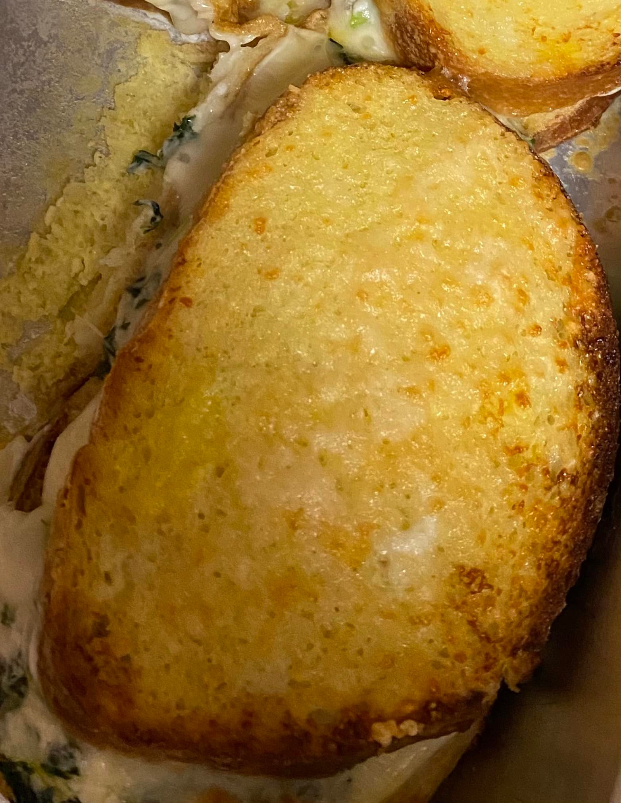

Lunch & Dinner: Spanakopita Grilled Cheese
Greek food is easily one of my favorites. Why not turn it into a sandwhich? This is another great-make ahead recipe, and turns out best when it can sit in the fridge overnight before baking
Ingredients:
- 1 loaf of bread(I used French), sliced (at least 1/2 inch slices)
- 8oz cream cheese, softened
- 1/2 cup mozzerella cheese, shredded
- 1/4 cup feta cheese, crumbled (pre-packaged crumbles work well)
- 6 slices mozzarella cheese (Low-moisture works the best)
- 1/2 cup shredded parmesean cheese
- 16oz frozen spinach, thawed and drained very weel
- 1/4 cup green onion, chopped
- 1 cup milk of choice
- 3 eggs
- Salt and pepper to taste
Procedure:
- Butter a 9x13 baking dish
- In a large bowl mix together cream cheese, feta, mozzarella, green onions, spinach(make sure it is drained very well), salt, and pepper
- Place 6-8 slices of bread in the baking dish; distribute spinach and cheese mixture evenly amongst slices; spread mixture evenly on each slice; place another slice of bread on top
- In another bowl, whisk milk and eggs together
- Pour liquid mixture over sandwiches
- Top each sandwich with shredded parmesean
- Cover the pan with foil; chill in the fridge overnight (at least 8 hours)
- When ready to bake sandwiches, remove from fridge and allow them to sit at room temperature for 30 minutes; preheat oven to 370° F
- Remove cover, sprinkle remaining cheese, and broil until cheese is melted
- Flip sanwiches and broil until bread is toasted
- Serve immediately